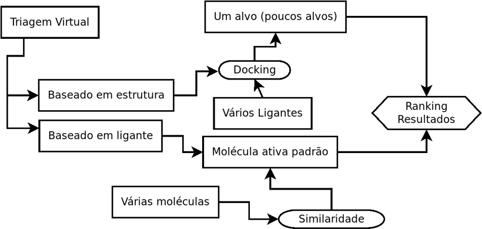
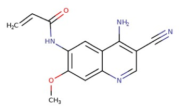
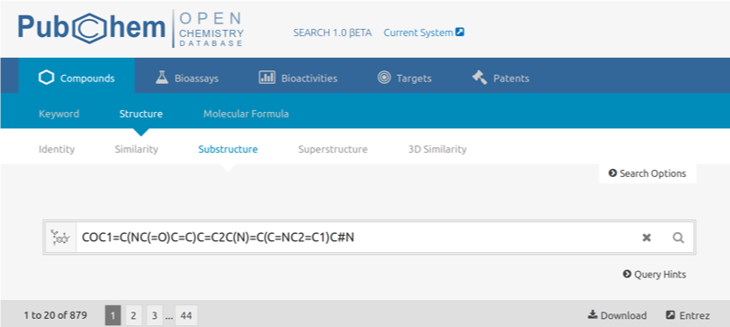
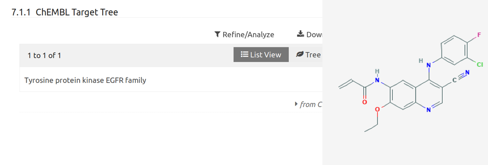
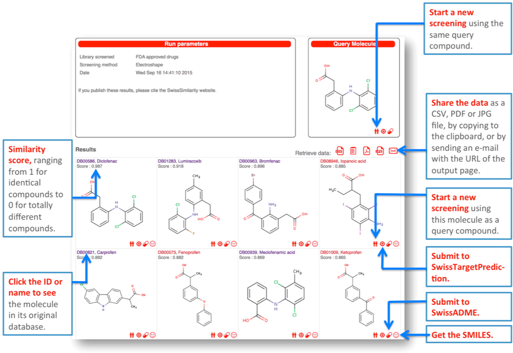
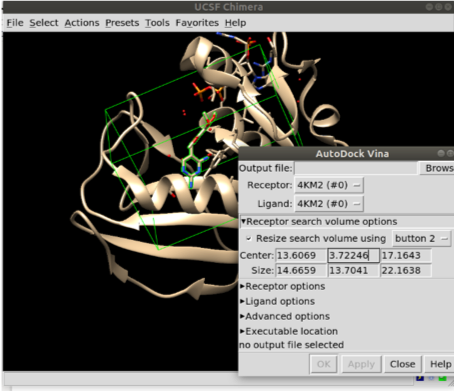

Triagem Virtual
Prof. Euzébio Guimarães – DFAR – BioME - UFRN
Introdução
A triagem virtual usa métodos baseados em computador para descobrir novos ligantes na base de estruturas biológicas. A triagem virtual é dividida em triagem baseada na estrutura (docking) e triagem usando compostos ativos como moldes (Triagem virtual baseada em ligantes). As técnicas de rastreio baseadas em ligantes concentram-se principalmente na comparação de análises de similaridade molecular de compostos com partes conhecidas e desconhecidas, independentemente dos métodos do algoritmo utilizado. Docking, como já dito, é utilizada para prever geometrias de interação de ligantes de proteínas e afinidades de ligação. O fluxograma abaixo define as etapas abordadas nesta apostila.

Tutorial 9
Triagem virtual baseada em ligantes
Moléculas similares geralmente têm atividades biológicas similares. Esse é o princípio da triagem virtual baseada em ligantes. Vamos supor que você tenha uma molécula extraída de uma fonte natural e deseja saber qual seria a possível atividade desta molécula. A maneira mais simples é buscar em servidores como o PubChem moléculas similares. Vamos usar para isso a molécula abaixo:
COC1=C(NC(=O)C=C)C=C2C(N)=C(C=NC2=C1)C#N

Vamos buscar por moléculas com contenham esse núcleo base no PubChem:

Encontramos uma possibilidade de interação com este alvo para um composto bastante similar.

O servidor utilizou sua molécula com a molécula padrão e fez uma busca contra todo o banco de dados de moléculas já ativas (ou não).
Outro servidor interessante é o SwissSimilarity (Zoete et al. 2016). Você fornece o SMILES da estrutura e escolhe qual banco de dados quer confrontar. Vamos escolher o PDB (Ligands from the PDB), pois teremos na resposta final alvos já elucidados.
Tutorial 10
Triagem virtual baseada na estrutura
Imagine agora que você deseja encontrar uma molécula para se ligar a um alvo específico do seu interesse. Por exemplo DHFR do Mycobacterium tuberculosis. Sua intenção é descobrir um possível inibidor. Para isso precisamos de dois dados:
- Dado do alvo de interesse, neste caso optamos pela estrutura 4KM2.
- Um banco de dados de ligantes disponíveis para a compra.
No caso de 2 pode ser um banco de moléculas qualquer: Moléculas disponíveis no seu laboratório, análogos virtuais da trimetoprima, etc. Quanto maior seu banco de moléculas mais caro será o procedimento.
Um servidor web que faz esse trabalho é o iDOCK. Basta dar o upload na estrutura e criar uma caixa de busca e pronto. Você poderá filtrar os resultados para reduzir o número de compostos a serem buscados. O número total de compostos é de 8 milhões. Não é uma tarefa fácil.
Vamos fazer o teste localmente com um banco de moléculas pré-selecionadas por mim. Este banco foi criado apenas como critério didático e é composto por moléculas que se ligam a DHFR. Estas informações foram retiradas do BindingDB com 1086 moléculas.

Antes de fazer o procedimento de triagem, vamos primeiramente tratar a proteína para a triagem virtual:
- Excluir umas das cadeias presentes.
- Determinar o size e o center da caixa para criar o arquivo de configuração.
- Usar a ferramenta DockPrep para corrigir problemas da estrutura.
- Salvar e converter para o formato
.pdbqt(recep.pdb).
python /opt/UCSF/Chimera64-1.13rc/lib/python2.7/site-packages/AutoDockTools/Utilities24/prepare_receptor4.py -r recep.pdb -o recep.pdbqt

Agora temos todos os dados para o receptor e a caixa onde será realizada a busca.
Vamos agora criar um script em shell que fará o seguinte trabalho:
- Converter a estrutura de sdf em 2D para 3D (oBabel e Balloon).
- Criar um arquivo
pdbqtpara o ligante (oBabel). - Realizar o docking da molécula no sítio da DHFR.
- Colocar os resultados do docking em um arquivo de Score para depois fazer o ranqueamento.
O script ficaria assim:
#!/bin/bash
echo "MOL_ID NAME ENERGIA" > TRIAGEM_log.txt
for i in `seq 1 1086` # loop até a molécula 1086
do
obabel 680A1AECE14635831BD5B5AC7D8BADC6ki.sdf -f 1 -l 1 -O ${i}.smi #converter cada molécula
balloon -f /home/euzebiogb/Downloads/CURSO_BIOME/PROGRAMAS/Linux_64bit-Balloon/MMFF94.mff --nconfs 1 --noGA ${i}.smi ${i}.sdf # Criar uma conformação em 3D rapidamente
obabel ${i}.sdf -O ${i}.pdbqt # converter para a entrada do autodock-vina
vina --ligand 1.pdbqt --config config.cfg --out ${i}_d.pdbqt # fazer o docking
ENER=`head -2 ${i}_d.pdbqt | tail -1 | awk '{ print $4 }'` # Extrair o score do vina
ENER=$(bc <<< "scale=2;$ENER*-1") # tornar o valor positivo
MOL=awk '{ print $2 }' ${i}.smi # Atribuir a uma variável
echo "${i} $MOL $ENER" >> TRIAGEM_log.txt # Criar o log.
rm ${i}* # remover os arquivos desnecessários
done
Os cálculos vão demorar bastante, provavelmente 32 horas. Quando terminar basta ranquear os resultados e visualizar no UCSF chimera as moléculas melhor ranqueadas.